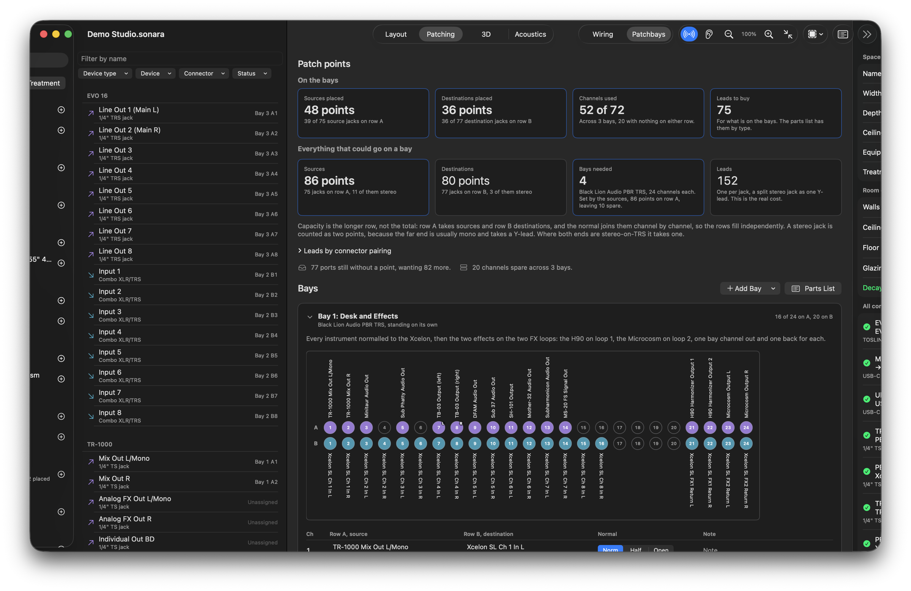
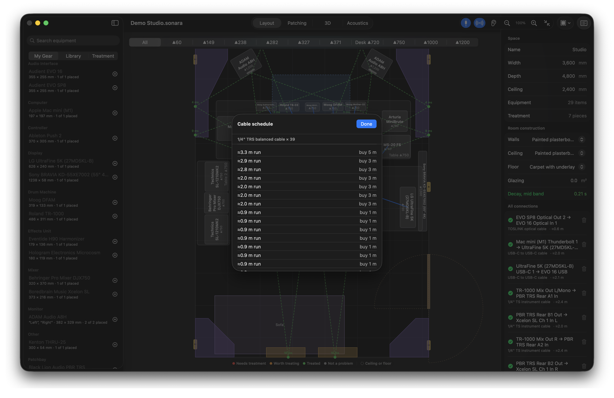

For macOS
Design the room
before you build it.
Sonara is a Mac app for planning studios and live setups. Draw the room, place the gear, wire it, plan the patchbays and treat the acoustics, all on one plan that checks itself.
Every cable is validated for fit and level. Every panel is checked against where the sound actually lands. The shopping list falls out of the drawing.

One plan.Everything the room needs.
The floor plan, the wiring, the patchbays and the acoustics are the same document. Change one and the others answer.
Wire

Drag an output to an input. Sonara checks the connector, the gender and the signal level, tells you when you need a pad or a DI, and refuses the connections that damage gear. The diagram lays itself out from the cabling.
Patch

Count the room's I/O and see how many bays it really needs. Assign every point, read the normals off the design, and the channel schedule and cable runs come out for free.
Treat

Room modes, reverberation per band and first reflections plotted on the walls, with a worst-first list of what to do. Place absorbers, traps and clouds and watch the numbers move.
See it

The room as drawn, with the treatment on the walls and the gear where it stands, so what the numbers say and what the room looks like are the same thing.
Design your own absorber

Draw the footprint of a trap to the shape of the corner, give it a fill and a thickness, and it joins the library for this room with its absorption worked out from the material.
Buy

A cable schedule with lengths, a parts list for the patchbays and a treatment list, all from the same drawing. Fix the plan and the list fixes itself. No spreadsheet.
Plan
Draw the room to scale. Place desks, racks, stands and seating, mark the doors, windows and power outlets, hang screens and speakers on mounts. Everything is in millimetres and everything knows how big it is.
Power
Mark the outlets where they are and see which racks can live there, how many sockets are free and what the room draws.